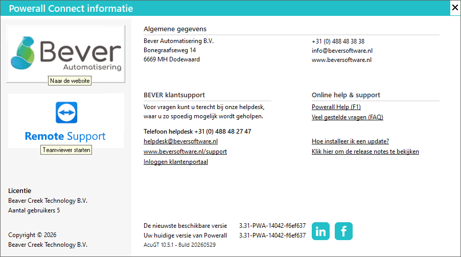
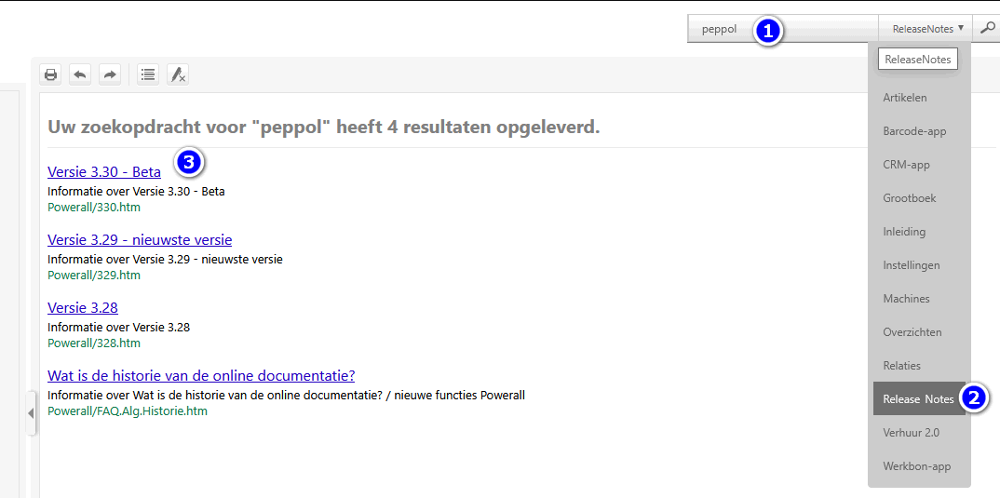
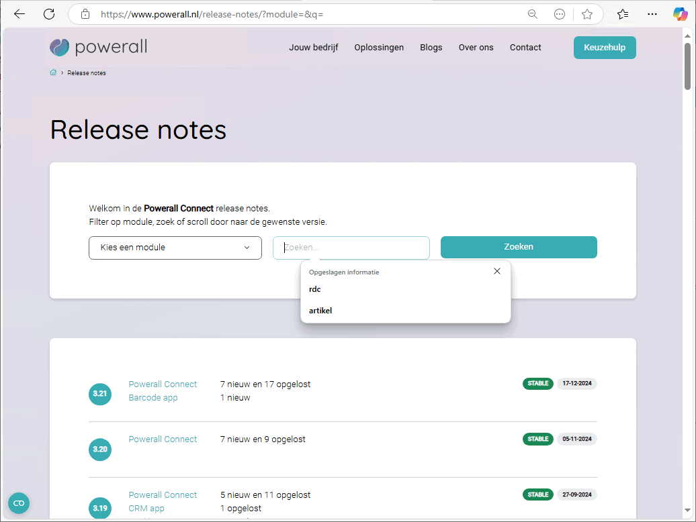

Powerall Connect wordt continu aangepast aan de wensen van onze klanten en geoptimaliseerd waar nodig is.
In elke nieuwe versie van Powerall Connect worden nieuwe - of gewijzigd functies doorgevoerd. Dit is beschreven in de Release notes.
Om de release notes te bekijken, doorloopt u de volgende stappen:
Start Powerall en login.
Kies een administratie.
Ga naar het Powerall Connect informatie symbool (i-tje) in de bovenste menubalk.
Klik op de rechtsonder op de link Klik hier om de release notes te bekijken of ../release-notes.

Vanaf versie 3.29 kan staan de Release notes in deze documentatie
Via de zoek knop kan er in de release notes gezocht worden.
Selecteer vervolgens het onderwerp

De gearceerde zoekterm(en) worden vervolgens weergegeven.
Blader even door het onderwerp heen.
Een handige functie is het zoeken op een bepaald woord of woorden in de release notes.
Dit kan per module of in alle versies.

Praktische informatie over een bepaald <onderwerp>.
Opmerking: Release notes is een term die gebruikt wordt om aan te geven welke wijzigingen er zijn in een bepaalde versie (release) van de Powerall Connect software.
Gerelateerde onderwerpen
Copyright ©